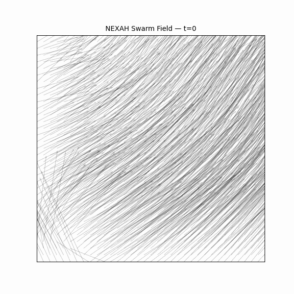
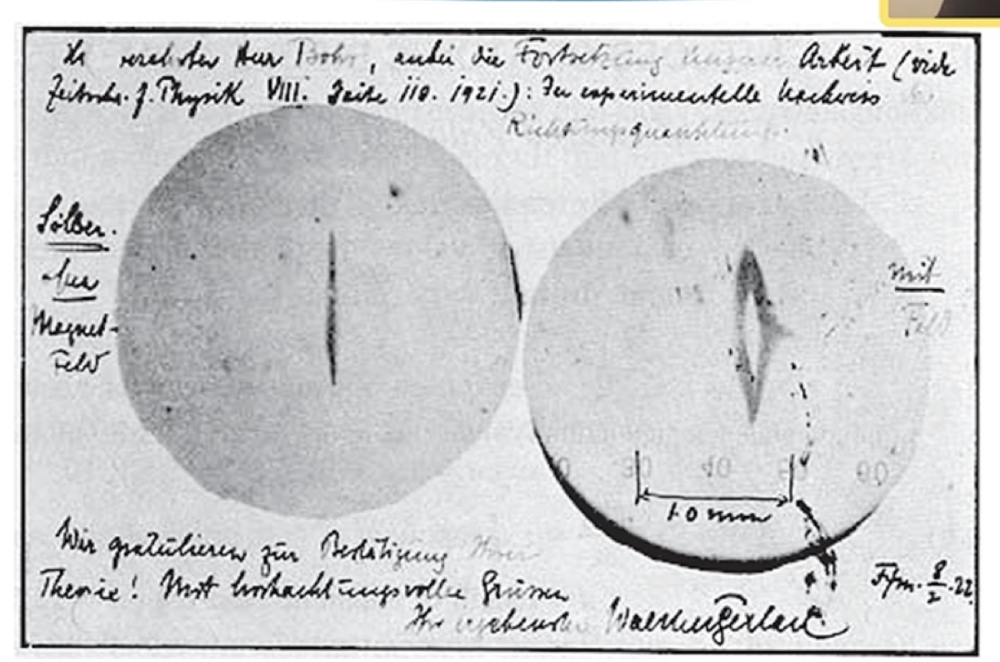

A0 · V2-A01 TYPED FIXTURE · METHOD:F0/F0− · SEARCH → MATCH → BIND → BUILD → RETURN
Matroschka
Cluster Bridge.
Das fehlende Bindeglied wird als endlicher, prüfbarer Pilot gebaut: ein deklarierter Triple‑Six-Träger, drei lokale Cluster, eine Geosphere mit Riemann-Karte, die vorhandene F0/F0−-Nullfuge, ein getrennter Q°-Messzustand und ein Return, der den beim Normieren verlorenen Radius als Witness verlangt.
GEFÜHRTE MODULTOUR · 9 STATIONEN · LOCAL
Triple‑Six → Carrier → Y/¥ → Ghostgrid → PI Oval → Hopf → Final Plug → 3D → Evidence.
Die Tour bewegt nur die Ansicht und setzt lokale Displayzustände. Sie verändert weder Quelle, Adresse, Evidenzstatus noch Navigatorgraph.
0 / 9 · BEREIT
Ein Träger, neun kontrollierte Lesarten.Start führt von der endlichen Adresse über die getrennte Oval-Abtastung und sichtbare Hopf-Faser bis zum ¥‑Gate und anschließend zur Evidence-Grenze.
SCIENCE DESK · FINDINGS →MATROSCHKA CARRIER WINDOW · NESTED RECORDS
Die Schalen tragen Riemann — nicht umgekehrt.
Adresse, Cluster, Cube und Geosphere liegen als getypte Träger ineinander. Erst außerhalb dieser Schalen entstehen Riemann-Karte und Q°-Beobachtung; der Return durchläuft die Schichten zurück bis zum unveränderten Adressrecord.
1 ADDRESS⊂2 CLUSTER⊂3 CUBE⊂4 GEOSPHERE + ρ→VIEW RIEMANN / Q°↩HERE RETURN
Visual boundary: Die goldene Spiral-/„Föhn“-Linse übersetzt die Formensprache der Owner-Visuals in eine Präsentationsansicht. Sie ist kein zusätzlicher Operator, kein physikalischer Wirbel und kein Evidenzbeleg für die Carrier-Hierarchie.
OWNER GLYPH LENS · C₁₂ ROOTS OF UNITY · TYPED VIEW ADAPTER
Maịtroschka: Y teilt die Ansicht — ¥ bindet den Return.
ị ist hier keine neue Zahl. Es markiert den bereits vorhandenen orientierten Pin zwischen den lokalen i↔j-Lesarten. Der Zwölferkreis liefert die Algebra; Y zeigt den Split in +i und −i, ¥ den sichtbaren Rückweg mit erhaltenem Witness.
SHIFT REGISTER · KEYBOARD × SYMMETRY × GEAR
Keyboard Shift → Gear Shift → Orientation Shift.
Eine Taste · vier Modifier-Zustände
aPLAINASHIFTåOPTIONÅSHIFT+OPTION
V₄ ≅ C₂ × C₂Die Ausgabe ist vom Tastaturlayout abhängig. Akzent-, Ordinal- und Gradzeichen bleiben prüfbare Eingabeausgaben, keine hergeleitete Zeichengenealogie.
Sym(12-gon) · Ordnung 24
r¹²=e · s²=e · srs=r⁻¹r dreht die Zwölferadresse; s spiegelt die Ansicht als TrapDoor-Flip. Das ist je nach Konvention D₁₂ oder D₂₄; deshalb wird die Ordnung immer mitgeführt.
Gear-State-Machine
P↔R↔N↔D↔3↔2↔1
AU·TOtransition controller · not another gear
P/R/N/D/3/2/1 sind lokale Auswahlzustände. Fahrzeugphysik, Übersetzungsverhältnisse und historische Schaltlogik werden nicht behauptet.
Typed composition: KEY × V₄-MODIFIER × GEAR-STATE → VISIBLE GLYPH / ORIENTED VIEW. L, T, umgedrehte 7, S/Haken, ª, µ, å und ° bleiben beobachtete Formen oder Tastaturausgaben. Ähnlichkeit allein erzeugt weder Operator noch Etymologie noch A0-Vokabular.
Notation boundary: Maịtroschka ist eine lokale Owner-Lesart, kein Navigator-Alias. Y und ¥ sind sichtbare Split-/Return-Marker, keine neu erfundenen mathematischen Glyphoperatoren. Die belastbare Struktur bleibt C₁₂, die zwölfte Einheitswurzel, der orientierte ±i-Zweig und der bereits typisierte Witness-Return.
HISTORICAL SOURCE LENS · NEXAHEDRON V3 · READ-ONLY QUARANTINE
Inner → Operator → Outer: Riemann als Projektion, nicht als Schale.
Das historische NEXAHEDRON‑V3-Instrument wird hier an der typisierten Stelle wiederverwendet: hinter Geosphere + ρ, vor Riemann / Q°. Die Matroschka trägt den Record; diese Linse wählt nur eine Darstellung und macht den Hin‑ und Rückweg sichtbar.
A0 CROSSWALK · DIRECT-ZETA
Kritische Fuge · Fixmenge statt Beweisbild
J(s)=1−s̄ · Fix(J): Re(s)=1/2Die Atembewegung ist eine Anzeigehomotopie um eine feste Fuge. Endlich markierte Nullstellenordinaten bleiben Referenzpunkte; daraus folgt keine Riemann-Hypothese.
A0 CROSSWALK · CAND:POLARPASS
Polar‑Janus · endliche Phase statt Naturgetriebe
θₖ=2πk/420 · k∈ℤ/420ℤi 0/420SHADOW dⱼ 0.000u TWO_HUMP_SINKGATE EXACT RETURN
OWNER INPUT · UNTYPED PARAMETER BANK
15 · 2.80 · 1.21 · 0.70 · 1.02 · 3.00Retained as comparison candidates. The animation binds only the finite k/420 clock and the declared 1:2:1 display silhouette.Das 420‑Rad ist eine quantisierte Anzeigephase. i wandert auf der Schale, Q₀=Re(i) macht den Ghostline-Schatten sichtbar und u folgt einer sinkenden Zwei-Buckel-Bahn in eine kleine Endschleife. Nur 420→0 ist hier der exakte Return. Das Janus-Paar ψ₊(t)=−ψ₋(−t), 111 Hz, Welle/Materie und Ratsche bleiben historische Labels ohne hier hergeleitetes physikalisches Gesetz.
A0-Abgleich: Beide Tafeln sind neue code-native Ansichten vorhandener Register. Sie erzeugen keine Identität, Relation, Study oder Finding. HOFMANN_RIEMANN bleibt HOLD; der Polar‑Janus-Slice behält seine gemischten und negativen Grenzen.
STATION 05 · CANONICAL PI LENS · OVAL / φ / 2:1
Platinum–Iridium: derselbe Ovalrand, zwei Abtastungen.
Die Matroschka baut keine zweite PI-Maschine. Sie bindet Visual 15 aus der kanonischen Platinum–Iridium-Linse ein: 24 Platinum-Punkte und 12 Iridium-Punkte lesen denselben atmenden Ovalrand.
Typed boundary: φ ist Displayphase; ϕ ist nur Referenz. Pt/Ir benennen zwei Leser, nicht zwei Materialantworten. „Ei“ und „Atmung“ sind Anschauungen. Ghost Snake π, das Prime-Letter-Zodiak-Schema und die Oval-Abtastung bleiben getrennte Records; gemeinsame Kreis- oder Schlangenformen erzeugen keine Identität.
STATION 06 · STANDARD HOPF FIBRATION · S³ → S² · S¹ FIBERS
Hier ist Hopf: viele geschlossene Fasern, eine gemeinsame Basis.
Das ist die aktuelle Hopf-Ansicht — nicht das Atomic-GLB weiter unten. Sie konstruiert echte Hopf-Fasern in S³ und projiziert sie stereographisch in den sichtbaren R³-Raum. Farbe markiert den Basispunkt auf S²; die wandernde Perle ist nur die gemeinsame Faserphase.
h(z₁,z₂)=(2z₁z̄₂, |z₁|²−|z₂|²)STEREOGRAPHIC DISPLAY · NOT A FIELD MECHANISM
ieee118_v2_swarm_field.gifSHA‑256 ba7d2536635a…859df271 · dynamische Feldreferenz, keine Hopf-Faser.Z=base−2y²−0.8sin(2πx/(n−1)+τ/4)Aus dem vorhandenen archivierten Display-Skript gelesen; keine Neuausführung eines Lab-Experiments.Source boundary: Hopf-Fibration, Swarm/H‑air und Stability‑Breath sind drei getrennte Records. Nur die linke Hauptansicht visualisiert die klassische Hopf-Abbildung. Der Swarm-GIF bleibt ein bestehendes NEXAH-Core-Experimentalartefakt; das atmende Grid ist eine lokale Formel-Replay-Ansicht. Ähnlichkeit, gemeinsames Atmen oder Verschlingung erzeugt keine gemeinsame Engine, physikalische Relation, Study oder Finding.
STATION 07 · FINAL PLUG · HOPF DISPLAY × IHARA RETURN AUDIT
Phase wird sichtbar — der Rückweg bleibt endlich.
Fünf Aperturen führen die kontinuierliche Faserphase um die Bola. Daneben protokolliert ein diskreter, nicht-zurückspringender C₅‑Pfad dieselben fünf Anzeigezeitpunkte bis zum getypten Return.
Typed boundary: Die Hopf-Seite zeigt eine kontinuierliche S¹-Faserphase der Standardabbildung S³→S²; die Ihara-Seite auditiert einen getrennten endlichen C₅/Hashimoto-Pfad. Die gemeinsame Fünferuhr ist eine Display-Kopplung, keine Identität beider Strukturen. ι=1.1 ist hier ein lokaler Anzeige-Witness, nicht das UTG‑IOTA‑Ereignis. 19→1.9, ein physischer Feldmechanismus, neue Operatoren, Studies, Findings oder Navigator-Relationen werden nicht behauptet.
STATION 08 · ATOMIC GLB SOURCE LENS · NOT THE HOPF VIEW
Die Perle im Träger: Q‑Core → Triple Wheel → Ladder.
Das vorhandene Atomic‑Matroschka‑GLB wird als räumliche Lesart an dieselbe fünfteilige Snap-Sequenz gebunden. Der Q‑Space Core atmet leicht; Proton-, Neutron- und Electron-Wheel laufen mit getrenntem Vorzeichen beziehungsweise Tempo. Die Leiter bleibt der sichtbare Übergangsträger.
↑ HOPF-FIBRATION · STATION 06
HISTORICAL MEASUREMENT WITNESS · SOURCE-BOUND CONTEXT
Der reale Riss: ein Strahl, zwei diskrete Spuren.
Links bleibt der Silberatomstrahl ohne Magnetfeld als einzelne Spur sichtbar. Rechts übersetzt das inhomogene Magnetfeld die diskrete Komponente des magnetischen Moments entlang der Messachse in zwei getrennte Ablagerungen. Das ist der historische Nachweis der Richtungsquantelung — nicht eine Bestätigung der Matroschka-Bridge.
CARRIER
ein Silberatomstrahl
→
ZIPPER / ∇B
Orientierung wird räumlich getrennt
→
BUTTON / WITNESS
zwei Auftreffspuren
Unsere Design-Linse: Knopf und Zipper an der „501 Blue Jeans“.
Der Zipper ist die Übergangsapparatur: Er macht eine zuvor interne Orientierung als getrennten Pfad sichtbar. Der Knopf ist der gespeicherte Auftreffpunkt — der Witness, an dem die Messung festgehalten wird. Die Jeans ist der gemeinsame materielle Carrier. Das ist eine erklärende Analogie für Seam, Split und Return; sie ersetzt weder das Experiment noch dessen Quantentheorie.
Source boundary: Kontextvergleich · keine Gleichsetzung · keine neue Physik · keine Publikationsfreigabe des Bildes.
A₁ · 90° · det +1
Lokaler Frame 1
A₂ · 180° · det +1
Lokaler Frame 2
A₃ · 270° + FLIP · det −1
Klein-Schritt
ILAU · PRESERVED
Adresse durch Witness
Cluster, Geosphere, Riemann-Karte und Matrixframe bleiben getrennte Records. Mit ρ und inverser Operatorreihenfolge kehren alle 216 Adressen exakt zurück.
ILAU · LOST
Radius beim Normieren
u → u/‖u‖ verliert die radiale Lage. Der negative Kontrollpfad verwirft ρ und erzeugt einen messbaren Return-Fehler.
ILAU · UNRESOLVED
Historischer Generator
Z₆³ ist der deklarierte Pilot, nicht die Rekonstruktion des historischen Triple‑Six Gate-Hit-Generators und keine natürliche Cluster- oder Riemann-Gesetzmäßigkeit.
Claim ceiling: endliches, deterministisches Mathematik-/Engineering-Fixture auf etablierter Algebra, Sphäre, stereographischer Projektion und Einheitswurzeln.
101 ist ein getyptes Adress-Token; D:(1,0,1) → 1.1 ist eine deklarierte Anzeigeabbildung und keine numerische Gleichsetzung. 1:2:1 bleibt ein Display-Label. METHOD:F0/F0− ist die vorhandene Nullfuge desselben Trägers — weder CF:F0 noch CF:F8. ị, Y und ¥ markieren Pin, Split und Return, sind aber keine neuen Zahlen oder algebraischen Operatoren. Das Shift Register verwendet klassisches V₄, Sym(12-gon) und einen endlichen Zustandsgraphen; es behauptet weder Glyphen-Etymologie noch Fahrzeugphysik oder eine Gruppe der Gear-Labels. NE¥AH / N exiT° bleibt ein sichtbares Exit-Glyph des 270°-Snaps, kein neuer Navigator-Alias. Kein Riemann-Hypothesen-Claim, keine historische Triple‑Six-Rekonstruktion, keine neue Physik, keine Study- oder Finding-Promotion.